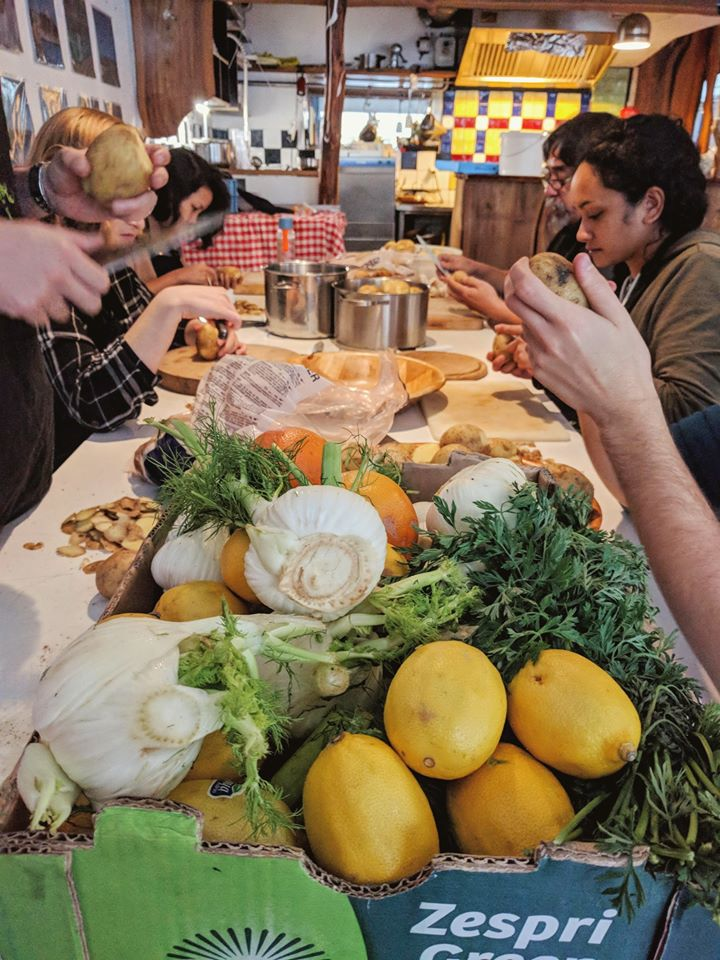
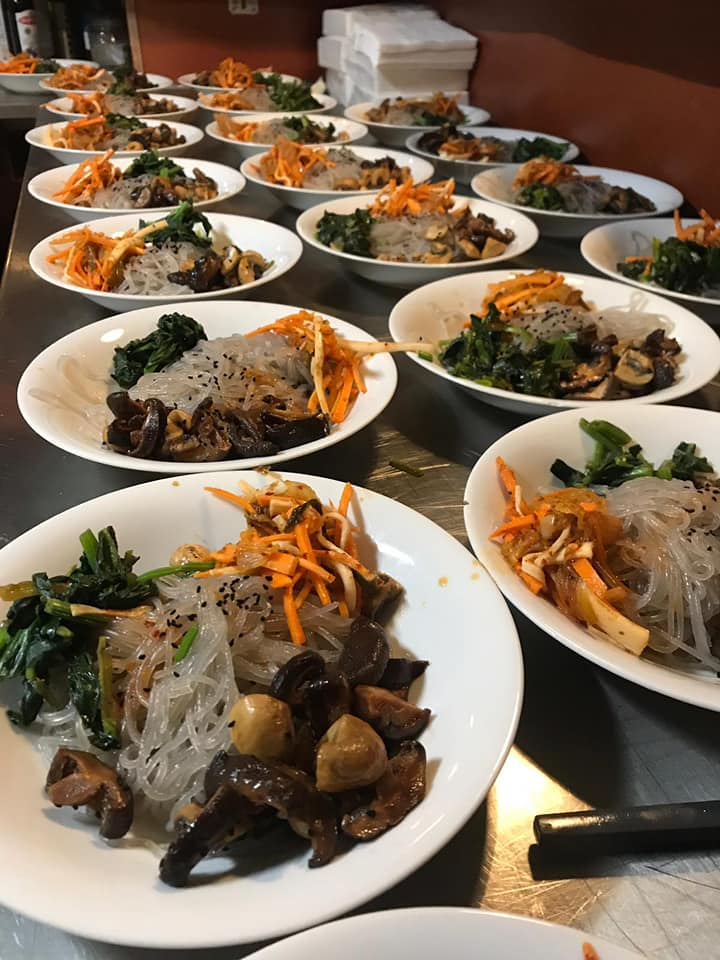
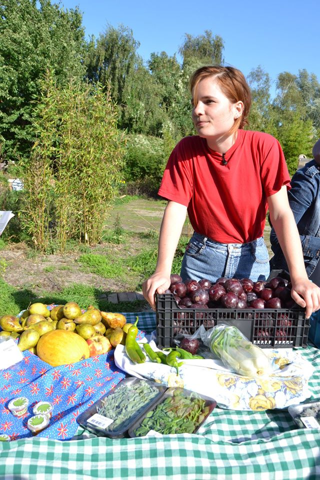

Photo Credits: Taste Before You Waste
The coronavirus pandemic will bring an additional 130 million people to starvation, the UN warned in late April. Meanwhile, Europe and the United States are producing unprecedented amounts of food waste following the abrupt decline in demand from restaurants, catering services and school mensas. The message here is that the food system in the western world is ridiculously toxic and wasteful. While others starve, “over 1/3 of all food produced globally is thrown away and in countries like the US, 50% of the food produced is wasted,” explains Isabel Allen. “Put simply, the food discarded by retailers and consumers in the most developed countries would be more than enough to feed all of the world’s 820 million hungry people, according to Food and Agriculture Organization FAO. While we waste food others struggle to get it.”
Isabel is the general coordinator of Taste Before You Waste (TBYW): “We are an Amsterdam based foundation. Our mission is to reduce food waste by providing citizens with inspiration knowledge and the opportunity for responsible and waste-free consumption”. Through wasteless dinners, food cycle markets and educational workshop, TBWY aims at improving the controversial relationship that humans have with food. According to Isabel, in the Western world we have became so disconnected from what we eat that what matters to us is the aesthetics of food, and not its nutritional value: “We are less likely to see bruised apples, wonky carrots and sprouting onions; let alone choose to purchase them because of standards set by supermarkets and us, the consumers”.
The wastefulness of our relationship with food “becomes more toxic when we consider the resources needed to create that product – the land, water, energy, people displacement and so on”. Indeed, much of our planet is taken up by spaces needed for cultivation and agriculture, and not ‘direct’ civilization. “When we waste food, when supermarkets and agricultural structures waste food, we also waste the resources used to create that food,” explains Isabel.
PanDam spoke to Gea Cignozzi, Hanneke van Tol and Zeb Marvin about their volunteering experiences at TBYW and how it has changed the way they think about food.
Wasteless Dinners
TBYW is best known for its Wasteless Dinners, taking place every Monday and Wednesday. Wasteless Dinners are donation-based, vegan, three course meals cooked by professional and creative chefs using food waste from local shops in Javastreet. At the end of the dinner guests can also take home left-over fruit and vegetables.
Hanneke, a chef at TBWY, believes that Wasteless Dinners are an important local solutions to urban food waste with a significant educational value. According to volunteer Zeb, the beauty of Wasteless dinners is that people don’t have high expectations when they show up first but then they change their mind once they join the meal.
“We’ve served a Korean menu, summer rolls with peanut dressing, shi-take ramen with kimchi and caramalized pineapples with coconut tapioca for dessert, but also, a three course dinner with a mix of sweet and savoury preparations of plums. I get inspired by Indonesian and Israeli cuisine, rich of vegan courses, spices and herbs. I also love to use wild berries, herbs and flowers for seasoning and decoration,” explains Hanneke.
Gea, who also volunteers as a server, believes that Wasteless dinners are a perfect opportunity to reflect: “This event is open to everyone -students, families, individuals in financial troubles- because we we want people from all walk of life to reflect on the flaws of this food system, on the extent of waste that it produces, waste that is still completely edible!”. Wasteless dinners also have an important educational value, as people learn to judge food through they’re senses rather than its expiration date: “People tend to throw away bruised apples, even if their still perfectly good! To judge whether something can still be eaten or not we should use our smell, it’s the most important sense for understanding whether food has indeed expired”.
Even in times of Covid, the fight against food waste continues
Due to Covid related regulations, Wasteless dinners cannot currently take place. But this hasn’t stopped some TBWY volunteers from continuing the fight against food waste. “To maintain our familiarity and relationship with the shops in Javastreet, we continue to do daily pick-ups. We then drop-off the food at various locations in need, like Huis van de Wijk De Meeuw, a community center in Noord to which I deliver food every Saturday,” explains Zeb.
Gea has also started collecting food in her neighbourhood in Amsterdam West, which she usually distributes to her roommates and neighbours: “Once I saw a local grocery shop in my area with a crate full of bruised apples. I spoke to the owner and we agreed that I could buy her food waste for a fixed price”. Why going to the supermarket when you can support your local food shops, save money and help the fight against waste?
What actions can we, as individuals, take?
According to Isabel, we shouldn’t aim at changing our relation with food from one day to the next, we should rather “engage in a critical process linked to our own food behaviour and try to analyse what actions of ours increase the waste”. For example, explains Zeb, we shouldn’t stock-up compulsively: “I think over-buying is a natural thing to do, you don’t want to be short of food. But that is where most wastes comes from. It’s important to learn how to plan, to know how you will use what you buy, to think about the whole life cycle of the product”.
As individuals, we can actively contribute buying less aesthetically appealing fruits and veggies: “Taking the ugly-looking vegetable at the supermarket increases significantly its chance of being used,” says Zeb. And what is even more important, as stressed by Hanneke, is “buying locally grown, seasonal and unwrapped food. The shorter the chain is, the less energy and food is wasted along the route”. Don’t be afraid to experiment with less known, seasonal ingredients: there is always a delicious recipe out there waiting to be created!